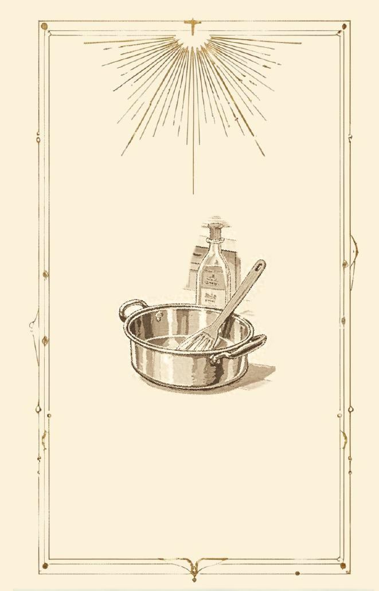
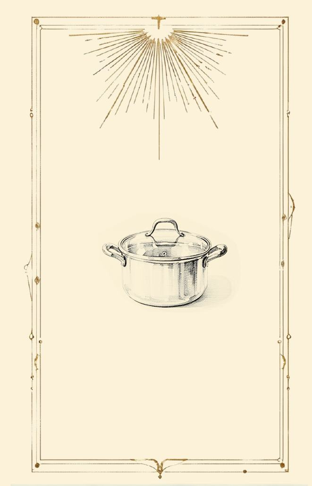
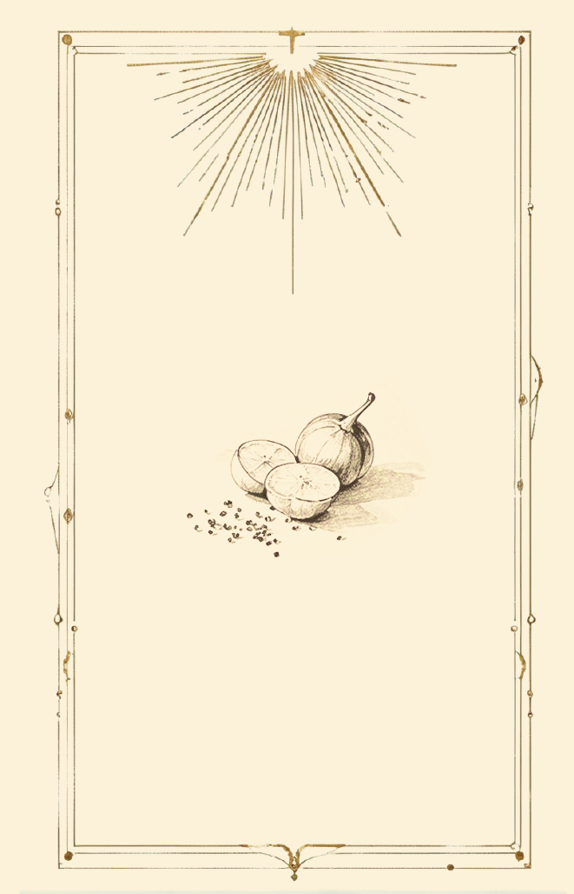
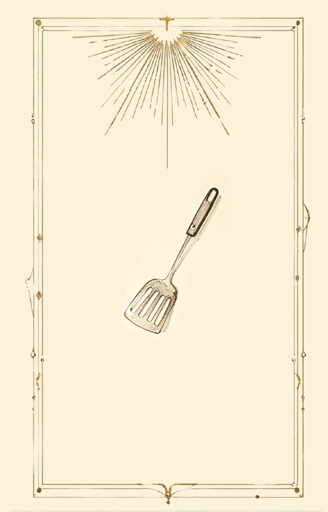
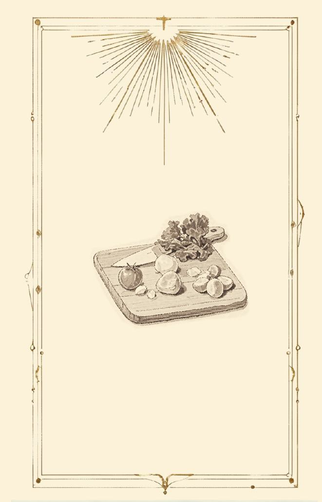

项目定位
《第N食粮》以虚构时间线与未来社会设定为基础，构建发生于 2572 年的“生态餐厅”系统，并通过卡牌交互机制将复杂的科技伦理议题转化为具有参与感的沉浸式体验原型。
Visual Exploration 02
围绕“后农业时代”展开的思辨设计与智能视觉探索项目，通过未来世界观构建、卡牌机制设计与 AIGC 视觉生成，讨论合成生物技术、生态循环与未来食物系统之间的关系。

《第N食粮》以虚构时间线与未来社会设定为基础，构建发生于 2572 年的“生态餐厅”系统，并通过卡牌交互机制将复杂的科技伦理议题转化为具有参与感的沉浸式体验原型。
项目从合成生物、后农业时代、生态循环与未来食物系统出发，建立世界观、时间线、系统逻辑与卡牌机制；再通过 AI 生图工具进行世界观视觉探索、卡牌概念设计、未来生态视觉生成、材质与氛围测试，逐步形成 AIGC 素材池与整体视觉语言。
我主要负责 AI 视觉工作流与整体体验包装，包括通过 AIGC 工具参与卡牌视觉设计、未来世界观氛围生成与素材池搭建，并结合思辨设计方向完成项目的视觉统一与概念表达。同时参与世界观设定、卡牌机制构建、视觉风格控制、展示页面设计与项目叙事包装。
AIGC Workflow
从合成生物、后农业时代、生态循环和未来食物系统中提炼思辨设计议题。
建立 2572 年生态餐厅的时间线、系统逻辑和卡牌交互机制。
用 AI 生图工具测试未来生态、食物器具、材质纹理和氛围参考，形成素材池。
筛选生成结果并统一卡面语言，将 AIGC 输出转化为可展示的视觉系统。
Card System




